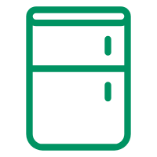

<!doctype html>
<html>
<head>
<meta charset="utf-8">
<title>雷达扫描动画</title>

<script src="js/jquery.min.js"></script>

<style>
html, body {
  width: 100%;
  height: 100%;
  padding: 0;
  margin: 0;
  overflow: hidden;
  font-family: Abel;
}

canvas {
  background-color: #333;
  /* -webkit-transform: scaleY(-1);
          transform: scaleY(-1); */
}

.info {
  position: absolute;
  left: 50px;
  bottom: 50px;
}

h1 {
  color: white;
  letter-spacing: 3px;
  margin: 0;
}

.message {
  margin: 0;
  color: #b99362;
}
</style>
</head>
<body>

<canvas id="myCanvas"></canvas>
<div class="info">
  <h1 class="title"></h1>
  <p class="message"></p>
</div>
<div class="addImg"></div>

<script>

// 假设数据库从有三条数据
var count = 3;
	
	
var c = $("#myCanvas")[0];

// 给画布设置监听
c.addEventListener("mousedown", doMouseDown, false);

var ctx = c.getContext("2d");
/* 扫描颜色 #009362*/
var color_gold="0,147,98";
var ww,wh;
var center={x: 0,y: 0};

/* 创建数组存放生成的点 */
/* 总共三个参数,横坐标、纵坐标、设备Id */
var addPoint = new Array();
/* 鼠标点击事件 */
function doMouseDown(){
	//获得点击的点的坐标
	var clickX = event.pageX;
	var clickY = event.pageY;
	//与中心点进行计算
	var finalX = clickX - center.x;
	var finalY = clickY - center.y;
	for (var i = 0; i < addPoint.length; i ++){
		var pointX = finalX - addPoint[i][0];
		var pointY = finalY - addPoint[i][1];
		//console.log(Math.sqrt(pointX*pointX + pointY*pointY));
		//判断点击的位置是否是设备存在的位置
		if (Math.sqrt(pointX*pointX + pointY*pointY) <= 10){
			localStorage.setItem("key"+addPoint[i][2],addPoint[i][2])
			alert("你的设备已被发现");
		}
	}
}

function getWindowSize(){
  ww=$(window).outerWidth();
  wh=$(window).outerHeight();
  c.width=ww;
  c.height=wh;
  center={x: ww/2,y: wh/2};
  
  ctx.restore();
  ctx.translate(center.x,center.y);
}
getWindowSize();

$(window).resize(getWindowSize);

//生成随机点
var enemies=Array(count).fill({}).map(
  function(obj){
    return {
      r: Math.random()*230 + 10,
      deg: Math.random()*350 + 10,
      opacity: 0
    }
  }
);

//旋转速度,即每次绘制时间,最小为10ms
setInterval(draw,10);
var time=0;

var deg_to_pi=Math.PI/180;

function Point(r,deg){
  return {
    x: r*Math.cos(deg_to_pi*deg),
    y: r*Math.sin(deg_to_pi*deg),
  };
}

function Color(op){
  return "rgba("+color_gold+","+op+")";
}

//每条数据 × 4
	var round = 0;
	var i = 0;

function draw(){
  time+=1;
  
	/* 默认旋转色 */
  /* ctx.fillStyle = "#111"; */
	ctx.fillStyle = "rgba(0, 0, 0, 0.8)";
  ctx.beginPath();
  ctx.rect(-2000,-2000,4000,4000);
  ctx.fill();
  
	//十字线
  ctx.strokeStyle="rgba(255,255,255,0.1)";
  ctx.moveTo(-ww/2,0);
  ctx.lineTo(ww/2,0);
  ctx.moveTo(0,-wh/2);
  ctx.lineTo(0,wh/2);
  ctx.stroke();
  
  ctx.strokeStyle=Color(1);
  var r=200;
  var deg=time;
  var newpoint=Point(r,deg);
  var line_deg = (time/2) % 360;
  // console.log(line_deg);
  
  var line_deg_len=100;
  
  for(var i=0;i<line_deg_len;i++){
    // var deg = (time-i);
    var deg1 = (line_deg-i-1) ;
    var deg2 = (line_deg-i) ;
    
    var point1=Point(r,deg1);
    var point2=Point(r,deg2);
    var opacity=1-(i/line_deg_len)-0.3;
    if (i==0) opacity=1;
    ctx.beginPath();
    // ctx.fillStyle="white";
    ctx.fillStyle=Color(opacity);
    ctx.moveTo(0,0);
    ctx.lineTo(point1.x,point1.y);
    ctx.lineTo(point2.x,point2.y);
    // ctx.stroke();
    ctx.fill();
  }
	var max = 0;
	enemies.forEach(function(obj, i){
		/* 初始化 */
		if (i == 0){
			max = obj.r;
			//console.log("初始化第一个生成点：" + obj.r + " " + obj.deg);
		}else{
			//代表生成点过近,重新生成
			while (obj.r - max <= 10){
				//console.log("默认生成点：" + obj.r + " " + obj.deg);
				obj.r = Math.random()*230 + 10;
				//console.log("重新生成点：" + obj.r + " " + obj.deg);
			}
		}
	})
	max = 0;
	
  enemies.forEach(function(obj){
		
    ctx.fillStyle=Color(obj.opacity);
    var obj_point=Point(obj.r,obj.deg);
		/* 绘制圆点 */
    ctx.beginPath();
    ctx.arc(
      obj_point.x,obj_point.y,
      4,0,2*Math.PI
    );
    ctx.fill();
		
		/* 绘制叉叉 */
    /* ctx.strokeStyle= Color(obj.opacity);
    var x_size=6;
    ctx.lineWidth=4;
    ctx.beginPath();
    ctx.moveTo(obj_point.x-x_size,obj_point.y+x_size);
    ctx.lineTo(obj_point.x+x_size,obj_point.y-x_size);
    ctx.moveTo(obj_point.x+x_size,obj_point.y+x_size);
    ctx.lineTo(obj_point.x-x_size,obj_point.y-x_size);
    ctx.stroke(); */
    
		//绘制图片
		/* if (round == 1){
			var img = ``;
			$(".addImg").html(img);
			var bingxiang = document.getElementById("bingxiang");
			ctx.drawImage(bingxiang, obj_point.x, obj_point.y, 30, 30);
		} else if (round == 2){
			var img = ``;
			$(".addImg").html(img);
			var yinshuiji = document.getElementById("yinshuiji");
			ctx.drawImage(yinshuiji, obj_point.x, obj_point.y, 30, 30);
		}else (round == 3){
			var img = ``;
			$(".addImg").html(img);
			var yinxiang = document.getElementById("yinxiang");
			ctx.drawImage(yinxiang, obj_point.x, obj_point.y, 30, 30);
		} */
		
		/* 绘制文本 */
		ctx.font = "20px Georgia";
		if (round / 4 == 1){
			ctx.fillText("影院灯", obj_point.x, obj_point.y);
		}else if (round / 4 == 2){
			ctx.fillText("电视", obj_point.x, obj_point.y);
		}else{
			ctx.fillText("音箱", obj_point.x, obj_point.y);
		}
		if (round == count*4){
			round = 0;
		}
		
		/* 获取生成的点 */
    if (Math.abs(obj.deg - line_deg)<=1){
			//每遍历到一条数据,+4
			round ++;
			//console.log(round);
			if (round / 4 == 1){
				ctx.fillText("影院灯", obj_point.x, obj_point.y);
				if (addPoint.length < count){
					addPoint.push([obj_point.x, obj_point.y, 1]);
				}
			}else if (round / 4 == 2){
				ctx.fillText("电视", obj_point.x, obj_point.y);
				if (addPoint.length < count){
					addPoint.push([obj_point.x, obj_point.y, 2]);
				}
			}else if (round / 4 == 3){
				ctx.fillText("音箱", obj_point.x, obj_point.y);
				if (addPoint.length < count){
					addPoint.push([obj_point.x, obj_point.y, 3]);
				}
			}
			// console.log(addPoint);
			obj.opacity=1;
			$(".title").text("发现设备");
      $(".message").text("坐标点: "+ obj.r.toFixed(3) + " at " +obj.deg.toFixed(3));
    }
    obj.opacity*=0.99;
    
		//淡化圆圈
    ctx.strokeStyle= Color(obj.opacity);
    ctx.lineWidth=1;
    ctx.beginPath();
    ctx.arc(
      obj_point.x,obj_point.y,
      10*(1/(obj.opacity+0.0001)),0,2*Math.PI
    );
    ctx.stroke();
    
    
  });
  
  ctx.strokeStyle=Color(1);
  var split =120;
  var feature =15;
  var start_r=230;
  var len = 5;
  
  for(var i=0;i<split;i++){
    ctx.beginPath();
    var deg = (i/120) * 360;
    
    if (i%feature==0){
      len=10;
      ctx.lineWidth=3;
    }else{
      len=5; 
      ctx.lineWidth=1;
    }
    
    
    var point1 =Point(start_r,deg);
    var point2 =Point(start_r+len,deg);
    
    ctx.moveTo(point1.x,point1.y);
    ctx.lineTo(point2.x,point2.y);
    
    ctx.stroke();
    
  }
  
  function CondCircle(r,lineWidth,func_cond){
    
    ctx.lineWidth=lineWidth;
    ctx.strokeStyle=Color(1);
    
    ctx.beginPath();
    for(var i=0;i<=360;i++){
      var point =Point(r,i);
      if (func_cond(i)){
        ctx.lineTo(point.x,point.y);
      }else{
        ctx.moveTo(point.x,point.y);
      }
    }
    ctx.stroke();
   
  }
  // CondCircle(300);
  
  CondCircle(300,2,function(deg){
    return ((deg+time/10)%180)<90;
  });
  CondCircle(100,1,function(deg){
    return (deg%3)<1;
  });
  CondCircle(190,1,function(deg){
    return true;
  });
  
  
}</script>

</body>
</html>
